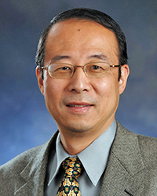
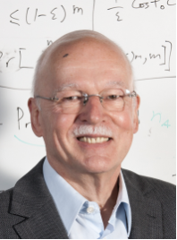
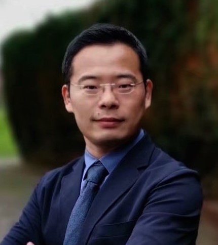

|  |
Prof. Yi Pan Title: AI in Bioinformatics and Medicine: Challenges and Opportunities Short bio: Prof. Yi Pan is currently a Regents’ Professor and has served as Chair of Computer Science Department at Georgia State University from January 2005 to August 2020. He has also served as an Interim Associate Dean and Chair of Biology Department during 2013-2017. Dr. Pan joined Georgia State University in 2000, was promoted to full professor in 2004, named a Distinguished University Professor in 2013 and designated a Regents' Professor (the highest recognition given to a faculty member by the University System of Georgia) in 2015. Dr. Pan received his B.Eng. and M.Eng. degrees in computer engineering from Tsinghua University, China, in 1982 and 1984, respectively, and his Ph.D. degree in computer science from the University of Pittsburgh, USA, in 1991. His profile has been featured as a distinguished alumnus in both Tsinghua Alumni Newsletter and University of Pittsburgh CS Alumni Newsletter. Dr. Pan's current research interests mainly include bioinformatics and health informatics using big data analytics, cloud computing, and machine learning technologies. Dr. Pan has published more than 450 papers including over 250 journal papers with more than 100 papers published in IEEE/ACM Transactions/Journals. In addition, he has edited/authored 43 books. His work has been cited more than 14,400 times based on Google Scholar and his current h-index is 74. Dr. Pan has served as an editor-in-chief or editorial board member for 20 journals including 7 IEEE Transactions. Currently, he is serving as an Associate Editor-in-Chief of IEEE/ACM Transactions on Computational Biology and Bioinformatics. He is the recipient of many awards including one IEEE Transactions Best Paper Award, five IEEE and other international conference or journal Best Paper Awards, 4 IBM Faculty Awards, 2 JSPS Senior Invitation Fellowships, IEEE BIBE Outstanding Achievement Award, IEEE Outstanding Leadership Award, NSF Research Opportunity Award, and AFOSR Summer Faculty Research Fellowship. He has organized numerous international conferences and delivered keynote speeches at over 60 international conferences around the world. |
|  |
Prof. Rolf Moehring Title: Optimizing Ship Traffic on the Kiel Canal Short bio: Rolf H. Möhring is visiting professor at Hefei University in Anhui, China, and professor emeritus for applied mathematics and computer science at TU Berlin. His more than 120 papers concern graph and network algorithms, combinatorial optimization, scheduling, logistics, and industrial applications. He was chair of the German OR Society and the Mathematical Programming Society. Since 2014 Rolf is honorary professor of the Beijing University of Technology, where he has served on the board of directors of the Beijing Institute for Scientific and Engineering Computing from 2014 to 2019. |
 |
Prof. Huaxi Gu Title: Optical Interconnects for High-Performance Computing Systems Short bio: Prof. Huaxi Gu is a professor affiliated with the State Key Lab of ISN, Vice Dean of School of Telecommunications Xidian University. Prof. Gu is the leader of the Youth Innovation Team of Shaanxi Universities. He is leading an international cooperation project as the Principle Investigator, funded by the National Key Research and Development Program of China. He is also the principal investigator for one key, two general and one youth project funded by National Natural Science Foundation. He is also PI for the joint projects with Intel Labs China, Shannon lab (HUAWEI), Communication Technology Lab(Huawei), ZTE, and CETC. Prof. Gu has published over 200 journal and conference papers, with his research interests being in the areas of networking technologies, network on chip, optical interconnect etc. He received Second prize of National Science and Technology Progress Award (in 2016), and First Prize of Science and Technology Award of Shaanxi Province (in 2015). He received the Best Paper Honorable Mention Award from IEEE ISVLSI2009, and Best Paper Award from ACM TURC 2017(SIGCOMM China). Prof. Gu served as TPC member of GLOBECOM, ICC and PDCAT etc and the technical reviewer for multiple journals including IEEE Transaction on Computer, IEEE Transaction on VLSI, IEEE Transactions on Cloud Computing, IEEE/OSA Journal of Lightwave Technology etc. |
|  |
Prof. Zonghua Zhang Title: When AI meets Network: Challenges and Opportunities Short bio: Prof.Zonghua Zhang is now working as an Expert at Huawei Paris Research Center, where he leads a team dedicated to building autonomous driving networks. Before diving into the industry, Zonghua has spent more than 15 years in academia at different institutions (Professor at IMT, Researcher at NICT, INRIA, JAIST, and University of Waterloo). He holds an HDR diploma (accreditation to supervise research) in computer science, and a Ph.D. degree in information science. Zonghua has been actively working at the intersection of networking, machine learning, and security. He has contributed, as either PI or leading contributor, to more than a dozen national and international research projects, with the topics covering anomaly detection, root cause analysis, network forensics, and so on. These research projects have led to the publication of nearly 100 research articles at well-recognized international journals and conferences. As the recognition by the community, he has received several best paper awards and JSPS overseas long-term invitational fellowship. He has been also invited to serve as general chair or program chair for tens of international conferences, TPC member for numerous conferences, as well as the editorial board member for four international journals. |
|
Prof. Dachuan Xu Title: Outliers Detection Is Not So Hard: Approximation Algorithms for Robust Clustering Problems Using Local Search Techniques Short bio: Prof. Dachuan Xu, Professor and doctorial supervisor of Department of Operations Research and Information Engineering, Beijing University of Technology. He received his Ph. D. from the Academy of Mathematics and Systems Science, Chinese Academy of Sciences in 2002. His main research interests include Combinatorial Optimization, Approximation Algorithm, Mathematical Programming, and Machine Learning, etc. Professor Xu is the Chairman of the Mathematical Programming Branch of OR Society of China. He has published over 100 peer-reviewed journal papers, such as Mathematical Programming, Operations Research, INFORMS Journal on Computing, and Algorithmica, etc. |
|
| Other keynote speaks will be confirmed later. | |